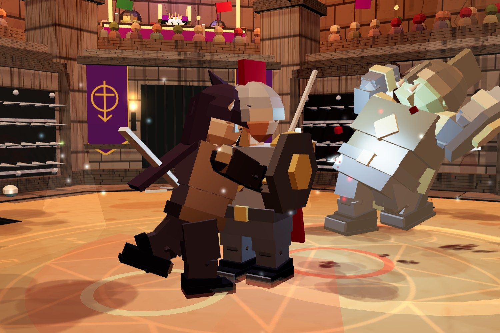

The Guild always collects. So does the sand.
The Deep Guild lent you the last door on Tallow Row, a rusted blade, and a debt you will never pay in coin. Fight your way up nine gates of the Blood Pit, live off what you win in the Lamp Market, and take the brass crown from Vexa, the Pale Queen, who has worn it for seven years. Under the stalls, an oracle will sell you yesterday back. Think hard before you sign.



- Fights decided by timing. Counters, punishes, perfect dodges and parries, rolled on real dice.
- Build your own fighter. Six classes, six peoples, stances and an edge that pays out all at once.
- Finishers the crowd remembers. By class, by weapon, by how it went, or by a gift from the stands.
- Gore that stays. Limbs come off, and the blood paints the sand where it fell.
- A city between bouts. Bet with Marc, buy at the Fence, furnish your door on Tallow Row.
- Four endings. What you signed, who you spared and what you owe decide which one you get.
“That crown is brass. I only want it for the tenth of the gate.”Overheard in the Lamp Market
AdultsBlood · Gore
Gambling
Gambling
Plays on any modern desktop or phone browser, with touch, keyboard and mouse, or a controller. One player. Saves on your device.
© 2026 North Coast Studios, with E Concepts. Guttercrown and the Deep Guild are trademarks of North Coast Studios.
© 2026 North Coast Studios, with E Concepts. Guttercrown and the Deep Guild are trademarks of North Coast Studios.